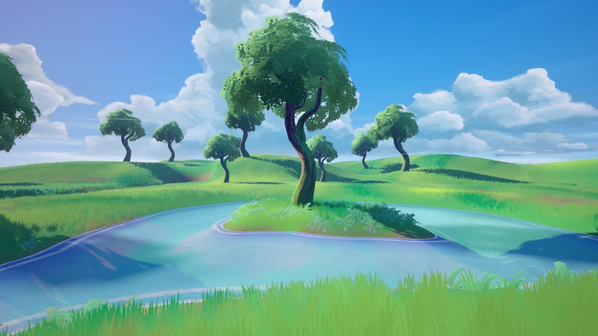
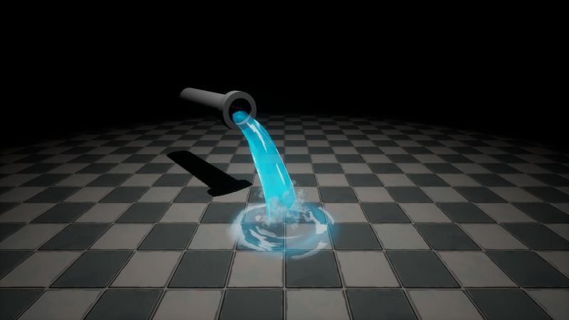

Variedad de proyectos
Materiales y VFX · Trabajo personal
Materiales procedurales en Substance Designer, totalmente parametrizables y exportados como PBR, y efectos en tiempo real con Niagara en UE5.


Materiales procedurales
Totalmente parametrizables y exportables como PBR (Albedo, Normal, Roughness, Metallic).
- Piedra: granito, pizarra, mampostería, roca.
- Madera: tablas envejecidas, troncos, vigas.
- Metal: acero oxidado, hierro forjado, latón envejecido.
- Suelos: tierra, adoquines, arena.
VFX con Niagara
- Partículas atmosféricas: polvo, niebla, chispas, brasas.
- Fuego y humo: antorchas, hogueras, chimeneas.
- Impactos y habilidades: trails, auras, efectos sincronizados con animaciones.
Galería

